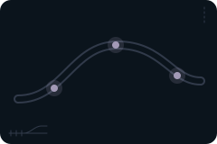
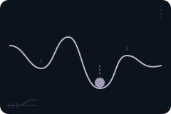
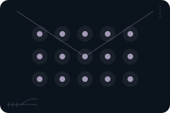
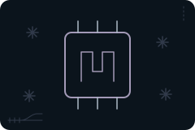
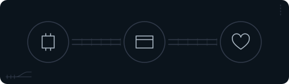

Oxford Instruments Plc
0,46 %Se selskabets placering i temaets oversigt og i fondens positionsliste.
Se positionen →
Hvad er demonstreret, og hvad er faktisk en forretning?
Hvad en kvantecomputer er, og de måder selskaberne i fonden prøver at bygge den på.
Selskaberne bygger ikke den samme slags kvantecomputer. Sammenlign de tekniske spor, og hold forskellen mellem et forskningsresultat, et produkt og selskabets omsætning for øje.
Teknologien er stadig på forskningsstadiet. Siden fortæller derfor, hvad selskaberne laver i dag, og ikke hvad maskinerne en dag kan bruges til. Hvor meget af selskabernes omsætning der kommer fra kvanteteknologi, kan ikke opgøres.
Illustration: NewDeal Invest.
Fonden
1,57%
af fonden ligger i temaet Kvantecomputere.
Alle procenter på siden er andele af hele fonden, afdelingen PMINDI (NewDeal Invest klasse n, den udloddende andelsklasse, der udbetaler udbytte) pr. 16.10.2026, og ikke af temaet.
Kvantecomputere fremhævet blandt de 12 temaer, NewDeal Invest deler fondens selskaber op i.
De fem største positioner i temaet, sorteret efter andel af hele PMINDI pr. 16.10.2026.
Se selskabets placering i temaets oversigt og i fondens positionsliste.
Se positionen →Chips, der styrer lys, og kvanteteknologi med lys, der arbejder ved stuetemperatur. Har i 2026 overtaget Luminar Semiconductor, NuCrypt og NHanced. Omsætning 2025: 0,7 mio. USD.
Se positionen →Se selskabets placering i temaets oversigt og i fondens positionsliste.
Se positionen →Se selskabets placering i temaets oversigt og i fondens positionsliste.
Se positionen →Se selskabets placering i temaets oversigt og i fondens positionsliste.
Se positionen →Sporskiftet
Andel af hele fonden, afdelingen PMINDI pr. 16.10.2026
Selskaberne i fonden bygger kvantecomputeren på hver deres måde. Tegningen viser sporene. Jo bredere et spor er, jo mere fylder det i fonden. Ingen af sporene er nået frem til en fuldt funktionel kvantecomputer.
En qubit er kvantecomputerens udgave af en bit, den mindste enhed for data i en computer. En bit er altid 0 eller 1, mens en qubit kan være en kombination af 0 og 1, indtil man måler den.En qubit er kvantecomputerens bit. Den kan være en kombination af 0 og 1, til den måles.
2 selskaber · 0,34 % af fonden
Atomer med elektrisk ladning holdes svævende i et vakuumkammer, en beholder uden luft, og styres med laserlys. Ifølge NIST kan de holde på deres kvantetilstand længe, altså den sarte tilstand, som beregningen bygger på, men de regner forholdsvis langsomt. Det er det eneste spor med to selskaber.


8Se efter: Hvilket teknisk resultat er vist, og hvilke begrænsninger følger med?
Tryk på et selskab for at se, hvad det laver.
1 selskab · 0,31 % af fonden
Qubitten er en enkelt lyspartikel, en foton. Selskabet arbejder ved almindelig stuetemperatur. I 2. kvartal 2026 kom det meste af dets omsætning fra selskaber inden for lys og chips, som det har overtaget.

Tryk på et selskab for at se, hvad det laver.
1 selskab · 0,21 % af fonden
Annealing er en anden type kvantemaskine, der er rettet mod bestemte opgaver, fx at finde den bedste af mange kombinationer. Selskabet bygger også den almindelige type kvantecomputer.

Tryk på et selskab for at se, hvad det laver.
1 selskab · 0,13 % af fonden
Atomer uden elektrisk ladning holdes fast med laserlys i et vakuumkammer. Selskabet laver også kvantesensorer, meget følsomme måleinstrumenter.

Tryk på et selskab for at se, hvad det laver.
1 selskab · 0,12 % af fonden
Små kredsløb på en chip køles ned til tæt på det absolutte nulpunkt, ca. minus 273 grader. Ifølge NIST regner de hurtigt, men deres kvantetilstand er mere skrøbelig end ionernes. Om chipfremstilling kan du læse på siden Chips og halvledere.

Tryk på et selskab for at se, hvad det laver.
1 selskab · 0,46 % af fonden
Temaets største selskab laver ikke kvantecomputere. Oxford Instruments laver mikroskoper og andre instrumenter. I januar 2026 afhændede selskabet NanoScience, den del af forretningen, der var rettet mod kvante. Selskabet oplyser, at kvante er den største del af omsætningen fra „andre markeder“ (37 mio. GBP i 2025/26), men ikke det præcise beløb.
Tryk på et selskab for at se, hvad det laver.
Selskaberne i temaet: Oxford Instruments, Quantinuum, IonQ, Quantum Computing Inc, D-Wave Quantum, Infleqtion og Rigetti Computing. Ingen selskaber i fondens andre temaer hører også delvis til dette tema.
Forklaret
En kvantecomputer bygger på kvantefysik, altså de regler, der gælder for de mindste dele af naturen, fx atomer og lys. Dens byggesten hedder qubits. Hvad en qubit er, kan du læse ved knappen „Qubit“ i tegningen af sporene.
Nej, selv om det ofte bliver sagt. Når man måler resultatet, får man kun en lille del af oplysningerne ud.
Kvantecomputere er meget sarte. Et lille elektrisk felt eller en ændring i temperaturen kan ødelægge en beregning. Ifølge den amerikanske måleinstitution NIST laver de bedste kvantecomputere i dag omkring én fejl pr. 1.000 operationer. En almindelig computer laver omkring én fejl pr. milliard milliarder beregninger. Derfor bruger forskerne meget arbejde på at rette fejlene.
Kvantecomputeren skal ikke afløse den almindelige computer. Ifølge NIST kan de to arbejde sammen. NIST skriver også, at ingen af de tidlige forsøg har vist sig at være virkelig nyttige.
Kilde: NIST, “Quantum Computing Explained” (åbner i nyt vindue), 2025, opdateret 2026.
8Se efter: Hvilket teknisk resultat er vist, og hvilke begrænsninger følger med?
Penge
Omsætning 2025
ca. 1,49 mia. kr.
omsatte de seks selskaber, der bygger kvantecomputere, for tilsammen i 2025. Tallet er al deres omsætning, ikke kun den del, der kommer fra kvante. IonQ stod for over halvdelen, delvis fra selskaber, IonQ har overtaget.
Kilder: selskabernes regnskaber (se Kilder), omregnet med Nationalbankens kurs for 2025 (Danmarks Statistik, DNVALA (åbner i nyt vindue)).
Lovet, ikke udbetalt
op til 100 mio. USD hver
har den amerikanske regering i 2026 givet tilsagn om til tre af selskaberne og stillet i udsigt til et fjerde. Hvert tilsagn alene er større end de fires samlede omsætning i 2025 (ca. 94 mio. USD). Til gengæld får staten en ejerandel på under halvdelen og ingen kontrol over selskaberne.
D-Wave Quantum, Quantinuum og Rigetti Computing fik endeligt tilsagn 08.09.2026. Infleqtion har kun et foreløbigt løfte (en hensigtserklæring) fra 21.05.2026.
Kilder: NIST, hensigtserklæringer 21.05.2026 (åbner i nyt vindue). Endelige tilsagn: D-Wave (åbner i nyt vindue), Quantinuum (åbner i nyt vindue) og Rigetti (åbner i nyt vindue).
Set udefra
Her er udvalgte opslag og videoer fra medier og forskningsinstitutioner. De er ikke fondens holdning.
New Scientist @newscientist · på engelsk
Kort fortalt Ifølge New Scientist har selskabet Quantinuum præsenteret en metode, der sætter rekord i at reducere fejl i logiske qubits, altså grupper af qubits, der sammen retter hinandens fejl.
8Hvad skal du lægge mærke til? Læs opslaget sammen med afsnittet om fangede ioner. Hvilket teknisk resultat er vist, og hvilke begrænsninger følger med?
Nyhed om kvanteforskning
New Scientist @newscientist · på engelsk
Kort fortalt Ifølge New Scientist viser et forsøg fra Googles ingeniører en mere effektiv måde at fejlsikre de vigtigste operationer i en kvantecomputer på. New Scientist skriver, at sådan fejlsikring ellers kræver mange ressourcer.
8Hvad skal du lægge mærke til? Læs opslaget sammen med afsnittet om nyhed om kvanteforskning. Hvilket teknisk resultat er vist, og hvilke begrænsninger følger med?
Google (Alphabet) er ikke blandt fondens selskaber.
Nyhed om kvanteforskning
Phys.org @physorg_com · på engelsk
Kort fortalt Ifølge Phys.org bevarede ioner, der var langt fra hinanden, deres fælles kvantetilstand i omkring 10 sekunder i en hukommelse af calcium. Phys.org skriver, at det er langt længere end de millisekunder, som de qubits, der forbinder netværket, holder.
8Hvad skal du lægge mærke til? Læs opslaget sammen med afsnittet om nyhed om kvanteforskning. Hvilket teknisk resultat er vist, og hvilke begrænsninger følger med?
Nyhed om kvanteforskning
Phys.org @physorg_com · på engelsk
Kort fortalt Ifølge RIKEN, gengivet af Phys.org, nåede op til tre qubits af silicium over 99,99 procent nøjagtighed, mens de blev styret samtidig gennem én fælles ledning. Ifølge RIKEN begrænser det de fejl, der normalt opstår, når flere qubits styres på én gang.
8Hvad skal du lægge mærke til? Læs opslaget sammen med afsnittet om nyhed om kvanteforskning. Hvilket teknisk resultat er vist, og hvilke begrænsninger følger med?
Oprindelig kilde: RIKENs pressemeddelelse (riken.jp) (åbner i nyt vindue). Forskningen er offentliggjort i Nature Physics, doi.org/10.1038/s41567-026-03466-2 (åbner i nyt vindue).
Opslagene er udvalgt af teamet bag NewDeal Invest. Afsenderne og de nævnte selskaber står ikke bag denne side, og opslagene er ikke fondens vurdering.
8Se efter: Hvilket teknisk resultat er vist, og hvilke begrænsninger følger med?
Videre
